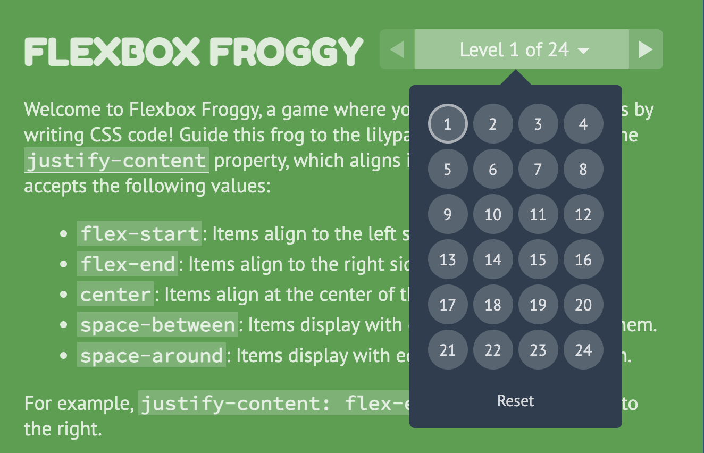
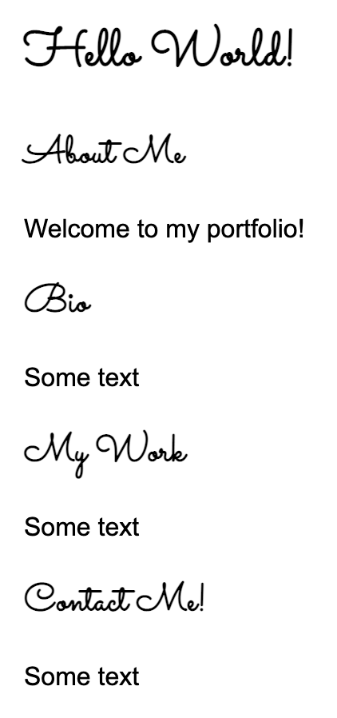
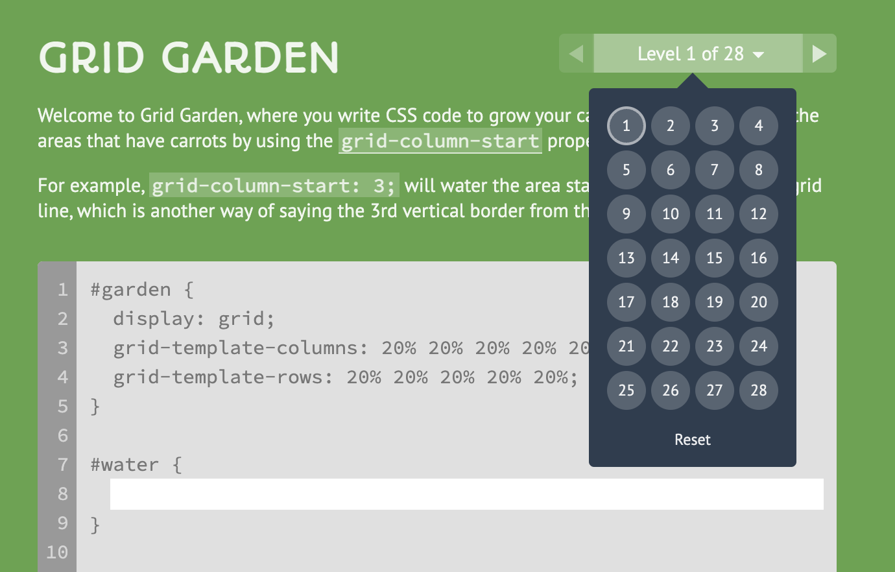
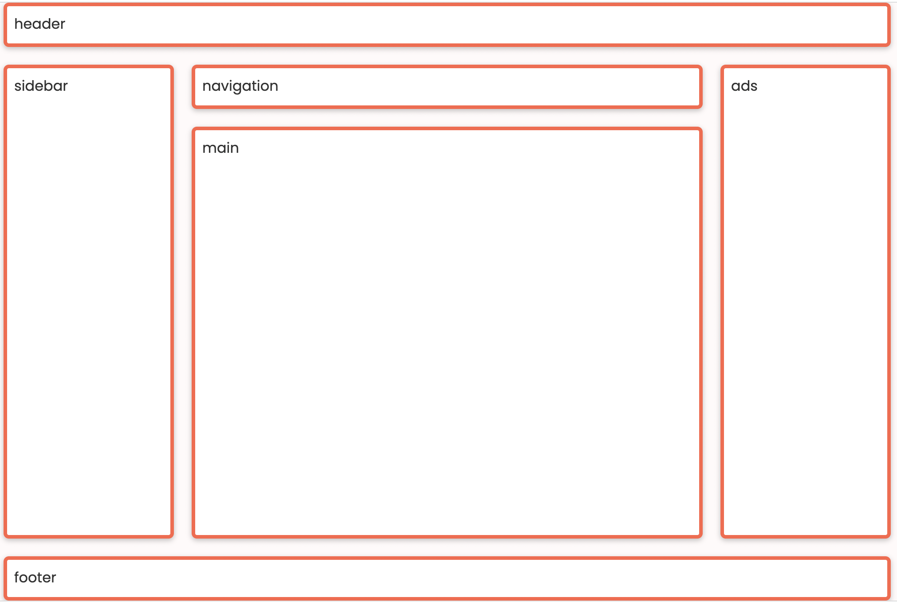
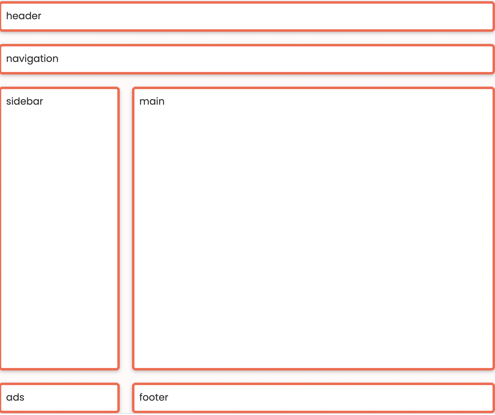
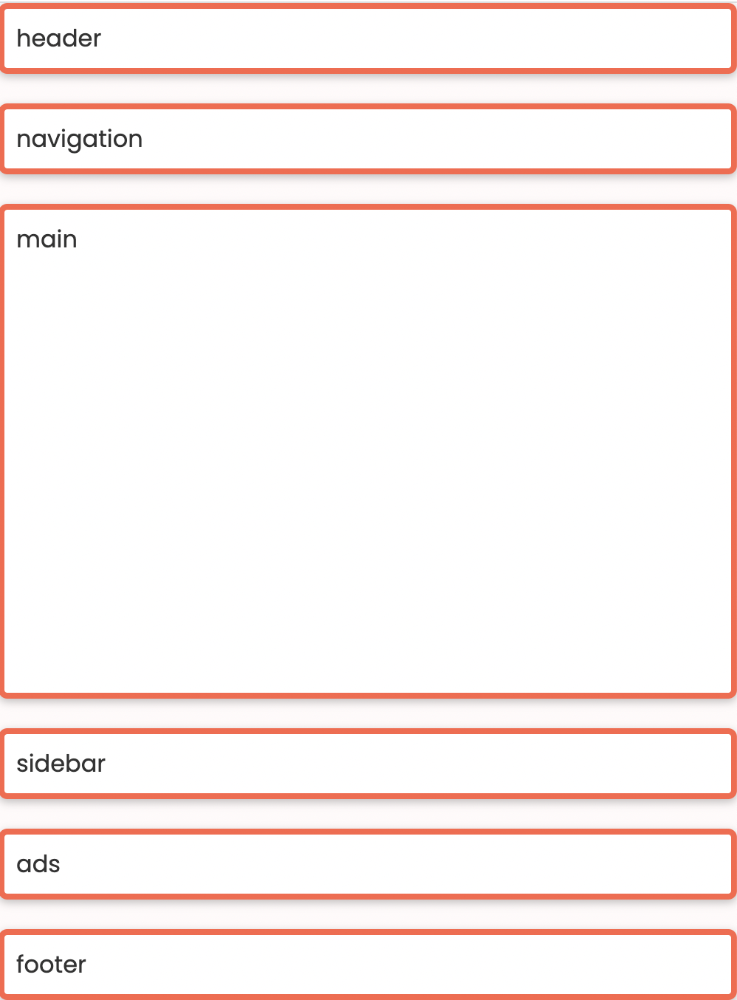

Assignments > HW4: CSS Grid & Flex Practice
Due on Mon, 02/20 @ 11:59PM. 20 Points.
Overview
The goal of this week’s homework is to give you practice with CSS Grid and Flexbox. To do this, you will complete 7 exercises, which you will have time to work on during Tutorial 5 this week.
Homework 4 can be completed individually or in pairs. If you decide to work in pairs, you can discuss solutions and share code with your partner. That said, both people should still complete all of the exercises, commit their own files to GitHub, and and submit to the Moodle separately. If you collaborated with someone, you will just make a note of who you worked with in the comments section.
References
To complete this homework, you will likely need to consult some CSS references (or Google for information). Below, I have provided a link to the mes relevant reference:
Media Queries
CSS Grid
- CSS Grid
- CSS Grid Garden
Please try to complete at least the first 10 levels
Flex
- Flexbox
- Flexbox Froggy.
Please try to complete at least the first 10 levels - When to use Flex versus CSS Grid?
- CSS Tricks: A Complete Guide to Flexbox
- W3 Schools Flexbox Guide
Your Tasks
Download the hw04.zip file, unzip it and move the unzipped hw04 folder into the csci185/homework folder.
1. Flexbox Froggy
Please complete levels 1-13 of Flexbox Froggy and take a screenshot of your completed levels (like the
screenshot shown below, but with the first thirteen levels completed). When you’re done, save your
screenshot in the hw04/01-flexbox-froggy folder.
- You can earn 2 points extra credit if you complete all 24 levels.

2. Center-align elements within a container
Open 02-flex and create the layout shown below by editing the CSS
file. You should not need to edit the HTML.

Please ensure that the following criteria are met:
- The height of each
sectionshould be the same as the height of the browser window. - The content inside of each
sectiontag should be centered horizontally and vertically. - Each
sectionshould have a different background color. - The content in each
sectionshould be stacked vertically
3. Create a Navigation Bar
Open 03-navbar, and try to make the following layout using flex.
The navigation bar should also be anchored to the top so when you scroll, the nav bar stays fixed.

Hints:
- Both the
navandulelements will need to be put into flex mode. - Use the Chrome inspector to adjust the alignment properties.
- To turn the bullets off, set the
list-style-typeproperty tonone. - To create a fixed menu, see this W3Schools code sample:
4. CSS Grid Garden
Please complete levels 1-15 of CSS Grid Garden and take a screenshot of your completed levels (like the screenshot shown below, but with the first thirteen levels completed).
- Please save your screenshot in the
hw04/04-css-grid-gardenfolder. - You can earn 2 points extra credit if you complete all 28 levels.

5. Create this layout
Open 05-grid, and try to make the following layout using CSS Grid.
You should not need to modify the HTML file. Note that the gridlines are just for demonstration, but
they won’t actually be visible.

Note: You do NOT have to center the text inside of each section unless you want to.
6. Create the Taco Temple layout
Open 06-tacotemple, and try to make the following layout using CSS
Grid. You should only have to edit the CSS file.

A few hints:
The main container is a grid with two columns – no rows
specified). See grid lines:

The section container is also a grid with two columns. See grid
lines:

7. Create the following mobile / responsive layout
During Lecture 8, we discussed how to use CSS Grid to make the three layouts shown below. For your final task, please implement this layout (or repurpose the work you already did in class). Use media queries to implement the tablet and mobile layouts. The recommended media queries are:
/* Tablet */
@media screen and (max-width: 800px) {
/* Your CSS here */
}
/* Phone */
@media screen and (max-width: 500px) {
/* Your CSS here */
}
Desktop Layout

Tablet Layout

Mobile Layout

What to turn in
Please read carefully: To turn in HW4, please link to all 7 tasks on your homepage. See Sarah’s homepage to see an example of what your homepage should look like:
When you’re done, paste the following links into the Moodle under the Homework 4 submission section:
- A link to your homepage on GitHub pages, which should link to all 7 parts of your
hw04 - A link to your GitHub code repository (where your code files are stored).